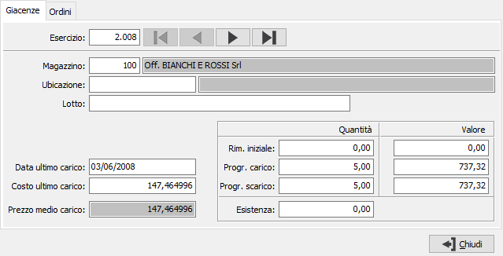
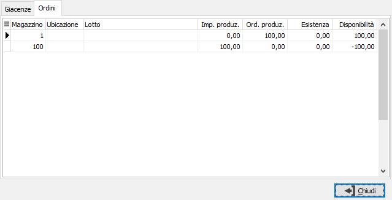
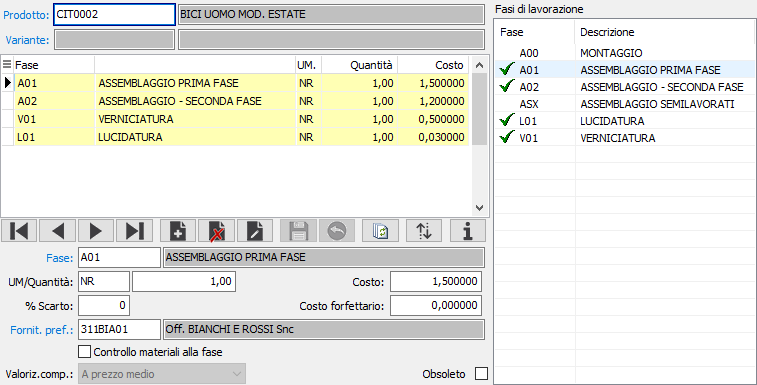

Cicli di lavorazione
La procedura consente di specificare le fasi di lavorazione che comporranno il ciclo di lavorazione per arrivare alla determinazione di un prodotto finito. Dopo aver inserito il prodotto e salvato con il pulsante Salva della toolbar, sarà sufficiente fare doppio clic sulle fasi che ci interessa assegnare per vederle comparire nella griglia; è anche possibile selezionare la fase e trascinarla nella griglia. Ogni fase assegnata è comunque modificabile per i dati riportati sotto la griglia.
Utilizzando il pulsante Ordina è possibile effettuare l'ordinamento delle fasi all'interno del ciclo di lavorazione.

Utilizzando il pulsante Info è possibile consultare le giacenze e gli impegni per ogni singola fase:


La manutenzione dei dati delle singole fasi avviene tramite il pannello posto sotto la griglia:

FASE: codice della fase di lavorazione che compone il ciclo. Sul campo sono attive le funzioni di ricerca (F9) e manutenzione (CTRL+W) sulla tabella stessa.
UM/QUANTITÀ: unità di misura è quantità relative alla lavorazione da eseguire.
COSTO: costo unitario in unità di misura relativo alla quantità di lavorazione.
%SCARTO: campo non utilizzato.
COSTO FORFETTARIO: costo complessivo della lavorazione. Se valorizzato non sarà più considerato il costo unitario per unità di misura.
FORNITORE PREFERENZIALE: codice del fornitore preferenziale della fase di lavorazione; deve essere un fornitore appartenente al gruppo indicato sulla fase di lavorazione. Se indicato sarà utilizzato in fase di pianificazione lavorazione nella fase di assegnazione fornitore. Sul campo sono attive le funzioni di ricerca (F9) e manutenzione (CTRL+W) sulla tabella stessa.
CONTROLLO MATERIALI ALLA FASE: indica che il componente in questa fase è lo stesso della fase precedente (casella con segno di spunta).
VALORIZZAZIONE COMPONENTE ALLA FASE: se è spuntato il controllo materiali alla fase indica il metodo di valorizzazione del componente: a prezzo medio, a costo ultimo a costo di mercato.
OBSOLETO: flag attivabile dall’utente per inibire il possibile utilizzo dell’elemento di tabella in esame nelle successive transazioni.